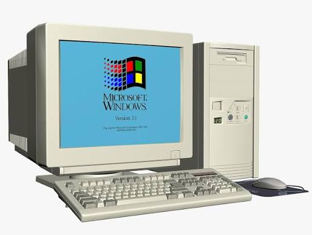

L'ordinateur old school est un appareil informatique ancien qui fonctionne avec des composants et des technologies obsolètes. Il est souvent utilisé pour des raisons nostalgiques ou éducatives, permettant aux utilisateurs de comprendre le fonctionnement des premiers ordinateurs.
| nom | photo | prix |
| Ordinateur old school |  | 200€ |